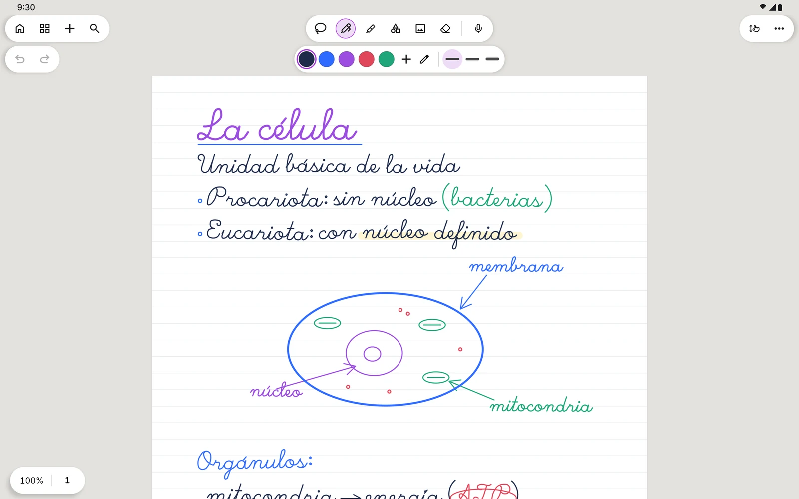
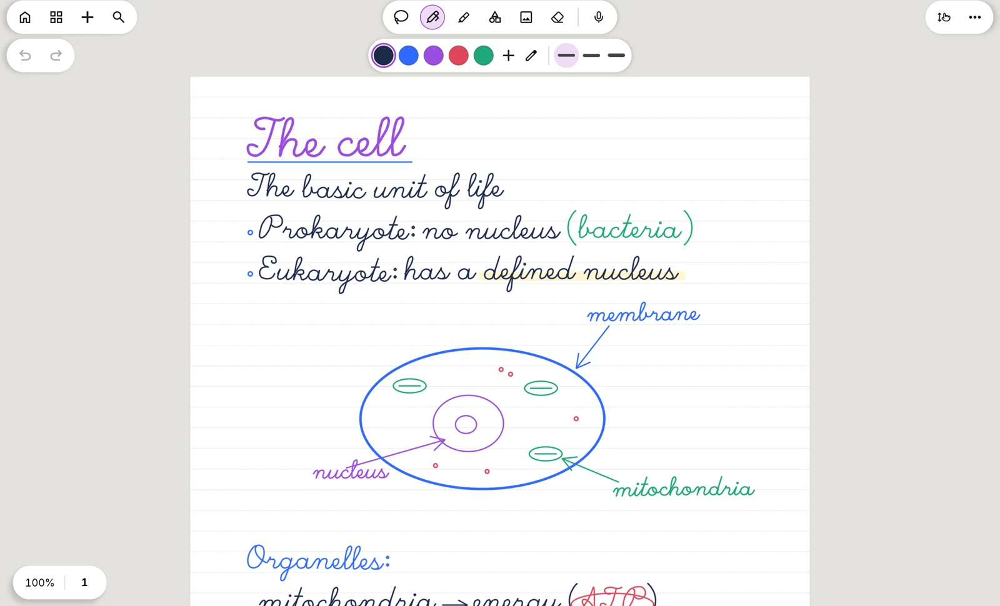
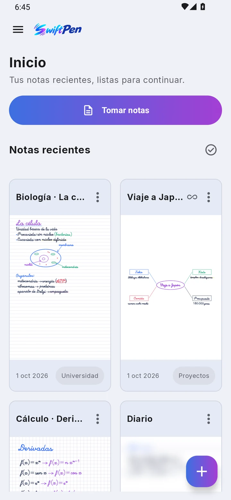
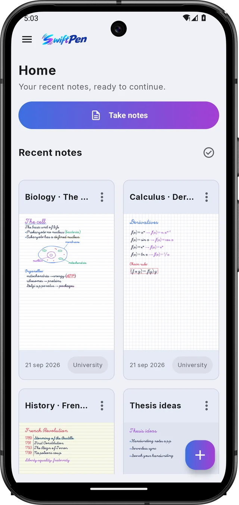
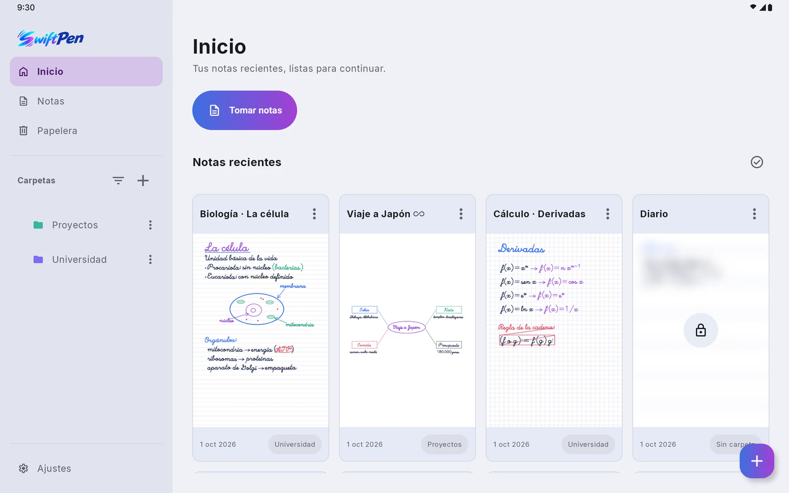
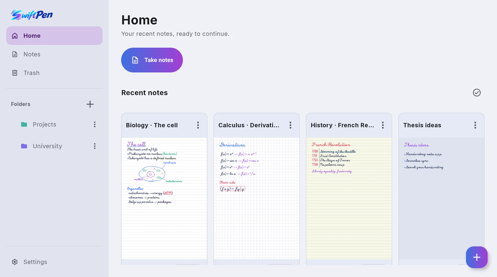

Tinta sin retardoInk with no lag
Se dibuja directo en la pantalla y se anticipa al trazo: escribir se siente como con un bolígrafo.Ink is drawn straight to the screen and predicts where your stroke is going, so writing feels like using a real pen.


Notas a mano para AndroidHandwritten notes for Android
SwiftPen pone la tinta en el mismo instante en que el lápiz toca la pantalla. Papel de verdad, tus PDF y tus notas siempre en tu dispositivo. SwiftPen lays down ink the instant your pen touches the screen. Real paper, your PDFs, and notes that always stay on your device.
Gratis para empezar. Pro, con un solo pago.Free to start. Pro is a one-time purchase.




FuncionesFeatures
Se dibuja directo en la pantalla y se anticipa al trazo: escribir se siente como con un bolígrafo.Ink is drawn straight to the screen and predicts where your stroke is going, so writing feels like using a real pen.
Rayado, cuadriculado, Cornell, hexagonal y más, en blanco, crema, kraft o azul. Hojas verticales u horizontales.Ruled, grid, Cornell, hex and more, in white, cream, kraft or blue. Portrait or landscape pages.
Importa apuntes, fichas o exámenes y anótalos como una página más. Exporta a PDF o a imagen cuando quieras.Bring in lecture notes, worksheets or past exams and mark them up like any other page. Export to PDF or images anytime.
Dibuja un círculo, una flecha o un rectángulo y mantén el lápiz quieto al terminar: queda perfecto. Con el lazo mueves lo que quieras.Sketch a circle, an arrow or a box and hold the pen still at the end: it snaps into shape. Use the lasso to move anything around.
Tu servidor WebDAV o tu Google Drive, sin intermediarios. Y las notas viejas pueden quedarse solo en la nube para liberar espacio.Your own WebDAV server or your Google Drive, with nothing in between. Older notes can live in the cloud only to free up space.
La interfaz se oscurece de noche; la hoja sigue siendo papel, para que tus notas se vean igual siempre.The interface goes dark at night while the page stays paper, so your notes always look the same.
Graba la clase mientras escribes. Después toca cualquier palabra y escucha qué se decía en ese momento.Record the lecture while you write. Later, tap any word to hear what was being said at that moment.
SwiftPen lee tu letra en el propio dispositivo, sin enviarla a ningún servidor, y te lleva a la palabra que buscas.SwiftPen reads your handwriting on the device itself, without sending it anywhere, and takes you straight to the word.
Exporta una nota como texto, en el orden en que se lee: columnas, notas al margen y párrafos incluidos.Export a note as text in reading order, with columns, margin notes and paragraphs kept in place.
EscrituraWriting
Nada de trazos que llegan tarde ni líneas que se redondean solas. Lo que escribes es lo que queda.No strokes trailing behind the pen, no lines smoothed into something else. What you write is what stays.


BibliotecaLibrary
Cada nota con su miniatura, en carpetas y subcarpetas con su color. Y si borras algo, la papelera te lo guarda un tiempo.Every note with its own thumbnail, in folders and subfolders with their own colors. Delete something by mistake and the trash keeps it for a while.


Tableta y móvilTablet and phone
La barra de herramientas se adapta a la pantalla, y con la sincronización tus notas te siguen de un dispositivo a otro.The toolbar adapts to your screen, and with sync your notes follow you from one device to the next.
PrecioPricing
Todo lo necesario para escribir es gratis, para siempre. Pro suma las funciones para estudiar mejor, con un solo pago.Everything you need to write is free, forever. Pro adds the study features with a single payment.
SwiftPenSwiftPen
SwiftPen Pro
Sin suscripciones. El precio se anuncia con el lanzamiento.No subscriptions. Pricing will be announced at launch.
PrivacidadPrivacy
SwiftPen no tiene servidores propios. Tus notas se guardan en tu dispositivo y, si sincronizas, van directas a tu almacenamiento. El reconocimiento de escritura también funciona sin que tu letra salga del teléfono.SwiftPen has no servers of its own. Your notes are stored on your device and, if you sync, they go straight to your own storage. Handwriting recognition runs without your writing ever leaving the phone.
La contraseña de tu servidor se guarda cifrada con el almacén de claves de Android.Your server password is encrypted with Android's keystore.
En Google Drive, SwiftPen solo ve los archivos que crea. El resto de tu Drive queda fuera de su alcance.In Google Drive, SwiftPen only sees the files it creates. The rest of your Drive stays out of reach.
PreguntasQuestions
No. Abres la app y escribes. Solo conectas una cuenta si quieres sincronizar con Google Drive.No. Open the app and write. You only connect an account if you want to sync with Google Drive.
Sí, todo. La búsqueda en tu letra necesita descargar el idioma una vez; después funciona sin conexión.Yes, everything. Handwriting search downloads its language model once, then works offline.
Con los lápices activos de Android, como el S Pen o los USI. También puedes escribir con el dedo si lo activas.With Android active styluses such as the S Pen or USI pens. You can also write with your finger if you turn it on.
No. Es un pago único y queda tuyo. Lo gratis sigue siendo gratis.No. It's a one-time purchase and it's yours to keep. The free features stay free.
Por ahora, SwiftPen es solo para Android: tabletas y móviles.For now, SwiftPen is Android only: tablets and phones.